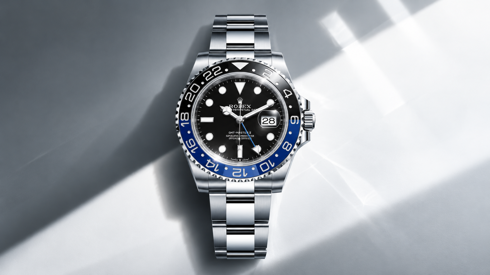
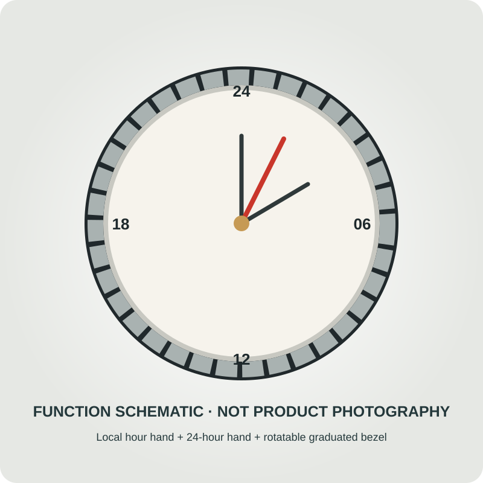

GMT-Master II
Read local time and another time zone together. Explore verified bezel colours, bracelet pairings and the independent 24-hour display.
Two time zones, one glance.
A separate 24-hour hand reads a second zone against the rotatable bezel. The local hour hand can be adjusted independently for travel.
A separate 24-hour hand meets a rotatable scale.

Rolex describes a conventional local-time display and a dedicated 24-hour hand for a second time zone. The bidirectionally rotatable, graduated bezel lets the wearer read a further zone. This is distinct from the Explorer II’s fixed bezel.
Model cards below record Rolex references and their exact listed bezel and bracelet details. No unavailable variant image is represented as a selectable configuration.
Bezel and bracelet combinations.
Each card opens the matching local reference state and Rolex model page. The 126713GRNR photograph appears only on its matching card.
Designed for connection across time zones.
Rolex dates the GMT-Master launch to 1955 and the GMT-Master II’s independent hour-hand functionality to 1982. The defining interaction is practical: keep home time on the 24-hour hand while adjusting local time independently.
The left-hand-drive 126720VTNR shifts the crown and date to 9 o’clock; it remains a distinct verified reference. All names, history and technical information belong to Rolex. Venturo does not manufacture, certify, stock or sell these watches.
Reference tools
Rolex names, references, specifications and history are attributed reference content. No Venturo manufacture, inventory, price or retail offer is represented. Exact-reference imagery is unavailable except for the licensed 126713GRNR photograph.